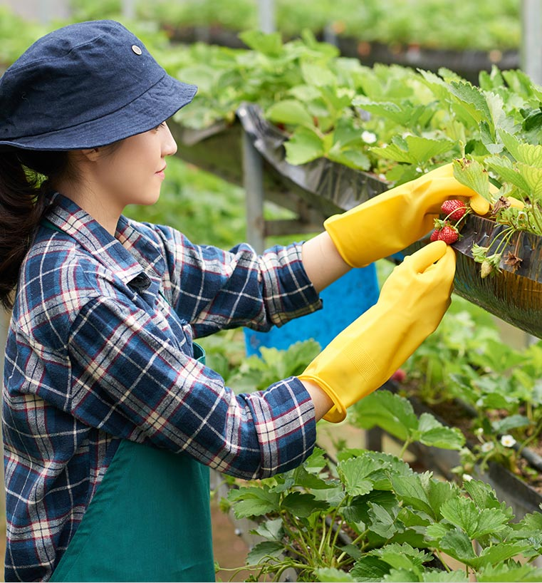

<div class="story-area row no-margin">
    <div class="story-title mobile-view">            
        <label>Our farms are located in the city</label>
    </div>
    <div class="story-img-area col-sm-6">
            <div class="story-img">   
            </div>
            
    </div>
    <div class="story-zone col-sm-6">
        <div class="story-title web-view">            
            <label>Our farms are located in the city</label>
        </div>
        <div class="story-desc">
            <label>
                We are your neighbors. That's the key to growing local. Our farms are built in the city.
                Our crops grow from our farm to your neighbourhood store in hours, not days or weeks.</label>
        </div>
        <div class="story-desc">
            <label>
                The amount we grow is always perfect. We plant and harvest according to our cutomers needs.
                There is no waste.</label>            
        </div>
        <div class="story-desc">
            <label>
                Our operations systems allows us to trace every plant from seed to store Traceability ensures the 
                highest possible quality.
            </label>            
        </div>
        <div class="aquaverty-btn row no-margin">
            <div class="btn-text">Story</div>
            <div class="btn-icon"><i class="material-icons">arrow_forward_ios</i></div>
        </div>
    </div>
    <!-- <div class="divider-area">
        <div class="divider"></div>
    </div> -->
</div>